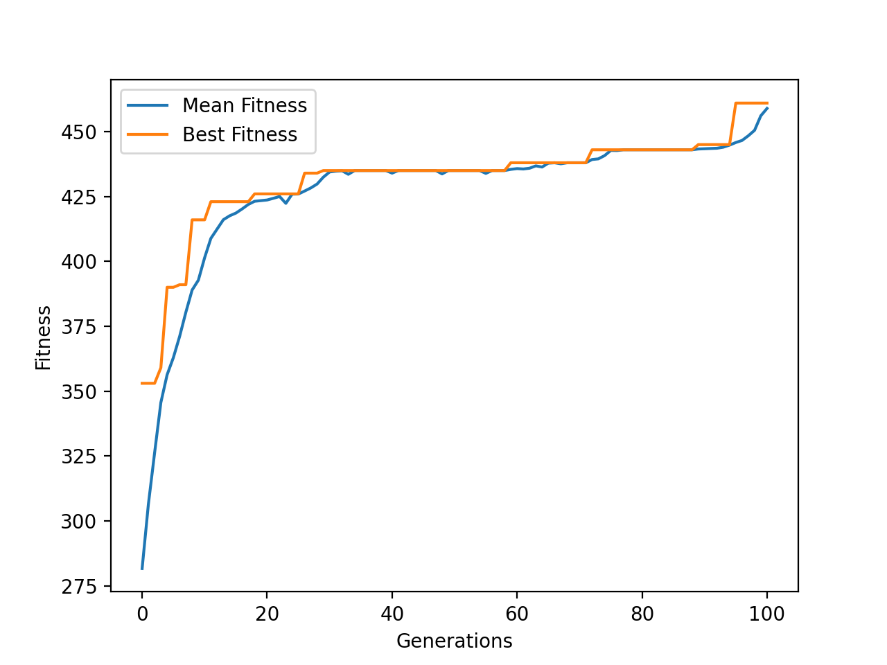
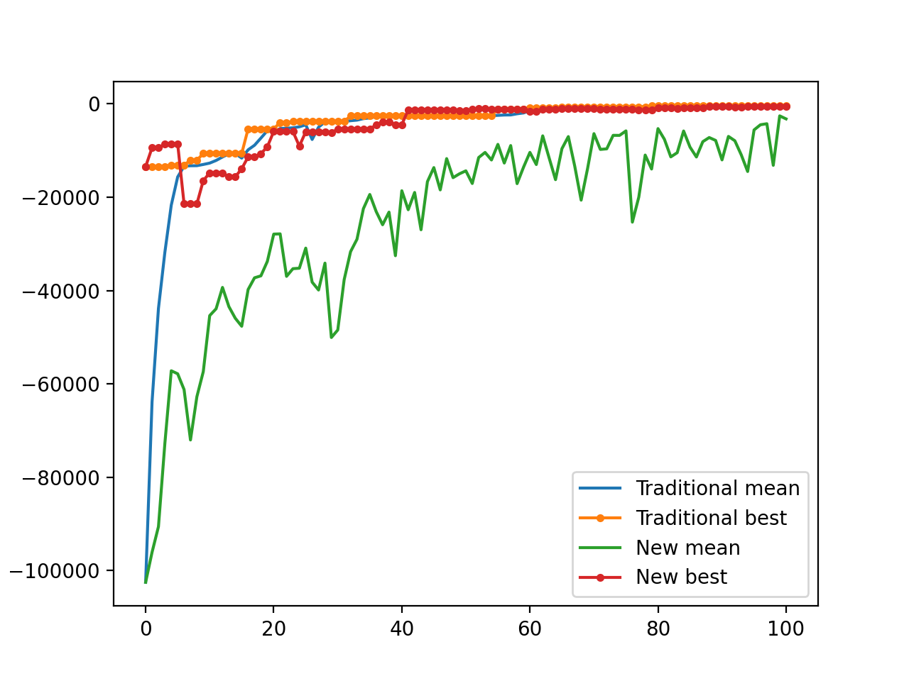

Examples and customization tricks¶
Examples¶
A simple example — Knapsack Problem¶
One of the famous problem is the knapsack problem. It is a good example for GA.
#!/usr/bin/env python3
# -*- coding: utf-8 -*-
from pyrimidine import MonoBinaryIndividual, SGAPopulation
from pyrimidine.benchmarks.optimization import *
# Generate a knapsack problem randomly
# Users can replace it with your owen goal functions
evaluate = Knapsack.random(n=20)
class MyIndividual(MonoBinaryIndividual):
def _fitness(self):
return evaluate(self)
class MyPopulation(SGAPopulation):
element_class = MyIndividual
pop = MyPopulation.random(size=20)
pop.evolve()
print(pop.best_individual)
Following is an equivalent expression without class keward.
MyPopulation = SGAPopulation[MonoBinaryIndividual.set_fitness(lambda o: _evaluate(o.chromosome))]
pop = MyPopulation.random(n_individuals=20, size=n)
pop.evolve()
For visualization, just use history (return DataFrame object) instead.
stat={'Mean Fitness':'mean_fitness', 'Best Fitness':'best_fitness'}
data = pop.history(stat=stat)
# data is an instance of DataFrame of pandas
import matplotlib.pyplot as plt
fig = plt.figure()
ax = fig.add_subplot(111)
data[['Mean Fitness', 'Best Fitness']].plot(ax=ax)
ax.set_xlabel('Generations')
ax.set_ylabel('Fitness')
plt.show()

Another Problem¶
Given several problems with two properties: type and number. Select some elements from them, make sure the sum of the numbers equals to an constant $M$ and minimize the repeat number of types. $$ \min R=\max_i\max_{t\in T}{t_i=t}\ \sum_in_i=M\ t_i \in T, n_i \in N $$ We encode a solution with binary chromosome, that means 0/1 presents to be unselected/selected.
#!/usr/bin/env python3
# -*- coding: utf-8 -*-
from pyrimidine import *
import numpy as np
t = np.random.randint(1, 5, 20)
n = np.random.randint(1, 4, 20)
M = 10
import collections
def max_repeat(x):
# maximum of repeat numbers
c = collections.Counter(x)
bm=np.argmax([b for a, b in c.items()])
return list(c.keys())[bm]
class MyIndividual(MonoBinaryIndividual):
def _fitness(self):
"""
select ti, ni from t, n
sum of ni ~ 10, while ti dose not repeat
"""
x, y = self.evaluate()
return - (x + y)
def evaluate(self):
return abs(np.sum([ni for ni, c in zip(n, self.chromosome) if c==1])-M), max_repeat(ti for ti, c in zip(t, self.chromosome) if c==1)
MyPopulation = SGAPopulation[MyIndividual]
if __name__ == '__main__':
pop = MyPopulation.random(n_individuals=20, size=20)
stat={'Mean Fitness':'mean_fitness', 'Best Fitness':'best_fitness'}
data = pop.history(stat=stat, n_iter=100)
import matplotlib.pyplot as plt
fig = plt.figure()
ax = fig.add_subplot(111)
data[['Mean Fitness', 'Best Fitness']].plot(ax=ax)
ax.set_xlabel('Generations')
ax.set_ylabel('Fitness')
plt.show()
Create new algo.¶
In the following example, the binary chromosomes should be decoded to floats. We recommend digit_converter created by the author to handle it.
#!/usr/bin/env python3
# -*- coding: utf-8 -*-
from pyrimidine.benchmarks.special import *
from pyrimidine import *
from digit_converter import *
ndim = 10
def evaluate(x):
return -rosenbrock(ndim)(x)
c=IntervalConverter(-5,5)
class _Chromosome(BinaryChromosome):
def decode(self):
return c(self)
class uChromosome(BinaryChromosome):
def decode(self):
return unitIntervalConverter(self)
class Mixin:
def _fitness(self):
x = [self[k].decode() for k in range(ndim)]
return evaluate(x)
class ExampleIndividual(Mixin, MultiIndividual):
element_class = _Chromosome
class MyIndividual(Mixin, MixIndividual[(_Chromosome,)*ndim + (uChromosome,)]):
"""my own individual class
Method `mate` is overriden.
"""
ranking = None
threshold = 0.25
@property
def threshold(self):
return self.chromosomes[-1].decode()
def mate(self, other, mate_prob=None):
# mate with threshold and ranking
if other.ranking and self.ranking:
if self.threshold <= other.ranking:
if other.threshold <= self.ranking:
return super(MyIndividual, self).mate(other, mate_prob=0.95)
else:
mate_prob = 1-other.threshold
return super(MyIndividual, self).mate(other, mate_prob)
else:
if other.threshold <= self.ranking:
mate_prob = 1-self.threshold
return super(MyIndividual, self).mate(other, mate_prob=0.95)
else:
mate_prob = 1-(self.threshold+other.threshold)/2
return super(MyIndividual, self).mate(other, mate_prob)
else:
return super(MyIndividual, self).mate(other)
class MyPopulation(SGAPopulation):
element_class = MyIndividual
def transit(self, *args, **kwargs):
self.sort()
self.select()
self.mate()
self.mutate()
if __name__ == '__main__':
stat = {'Mean Fitness':'mean_fitness', 'Best Fitness': 'best_fitness'}
import matplotlib.pyplot as plt
fig = plt.figure()
ax = fig.add_subplot(111)
_Population = SGAPopulation[ExampleIndividual]
pop = MyPopulation.random(n_individuals=20, sizes=[8]*ndim+[8])
cpy = pop.clone(_Population)
d = cpy.history(n_iter=100, stat=stat)
ax.plot(d.index, d['Mean Fitness'], d.index, d['Best Fitness'], '.-')
d = pop.history(n_iter=100, stat=stat)
ax.plot(d.index, d['Mean Fitness'], d.index, d['Best Fitness'], '.-')
ax.legend(('Traditional mean','Traditional best', 'New mean', 'New best'))
plt.show()
